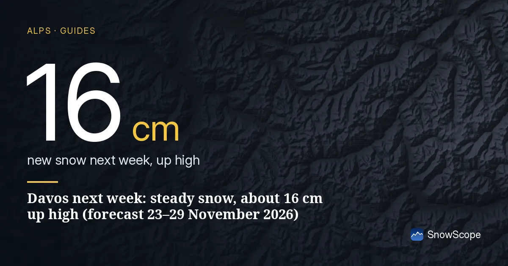
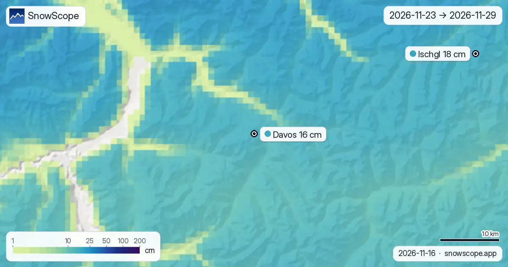

Davos next week: steady snow, about 16 cm up high (forecast 23–29 November 2026)
Next week brings modest but steady snow to Davos. The upper slopes near 2600 m will see about 16 cm (range 4–27 cm), with Thursday 26 November as the peak day. The snow line stays high: expect rain at the village, real snow only above 1900 m.
See the live snow forecast for Davos in the SnowScope appSnow depth, powder alerts and the 3D map, free.

What comes before next week
This week (17–20 November) is thin at Davos. The top gets 14 cm but the base gets only 4 cm, so little accumulates where most people ski. Next week is where the action is—the reverse of what happens further west in the Alps.
By next Monday, there will already be some older snow on the upper slopes to build on, but the base remains nearly bare. That means depth next week will come entirely from fresh falls.
Breaking down the week of 23–29 November
Total for the week: 16 cm near 2600 m, 15 cm near 1900 m, 5 cm near 1100 m. The range widens at altitude—4 to 27 cm at the top, only 2 to 8 cm at the base.
Snow does not arrive evenly. Wednesday 25 and Thursday 26 matter most, then again on Sunday 29. Most other days bring little. Thursday 26 stands out as the heaviest single day, with 6 cm in the forecast centre and up to 12 cm in the high case.
Thursday 26 November: aim for the top
The best day of the week is Thursday 26 November. At the top, expect 6 cm (possibly 12 cm). That is fresh cover on the piste, not a powder day, but enough to soften the skis after thin early-season conditions.
Height is everything this week. Go to Parsenn and Weissfluhjoch: those north-facing slopes hold snow longest in autumn and collect the most when flows come from the north-west. The classic long runs from Weissfluhjoch down towards Küblis reward skiers who climb high and ski early in the day, before wind or sun damages the surface.
Rain in the village, snow on the ridge
The gap between 16 cm at the top and 5 cm at the base tells the story: the snow line sits well above the village. Most of next week will see rain or slush at 1100 m and real snow only above 1900 m.
Klosters and Küblis, in the bottom of the main valley, will be hit harder by rain. Plan to spend your day higher up and return to lower terrain only as the sun sets or the temperature drops.
How certain is this forecast?
Not very. The low case gives only 4 cm at the top, the high case 27 cm. That spread reflects uncertainty in the storm track. By this weekend (before the forecast period starts), the picture should become much clearer.
If you can book flexibly, wait for an update early next week. If not, pack for mixed conditions: waterproof jacket for the base, good goggles for cloud at altitude, and patience for a patchy week.
How Davos compares nearby
St. Moritz (38 km away) is forecast to get 19 cm at the top next week, Ischgl (40 km away) 18 cm, and Livigno (43 km away) 19 cm. Davos at 16 cm sits slightly behind but very close—not enough to base a trip choice on snow depth alone.
Terrain and lift access matter more. If you want classic long runs and north-facing ridges, Davos and Parsenn are the right choice regardless.
Tips for skiers
- Off-piste: new snow brings avalanche hazard. Check the official Swiss avalanche bulletin before you leave the piste.
- Confirm which lifts open before you travel. Early season at Davos means not all terrain is always running.
- Pack a waterproof shell and change of base layers. The 5 cm at the village hides significant rain; you will get wet at lower altitude.
- Ski high and ski early. Thursday 26 will draw crowds to Parsenn; aim for first tracks on the Weissfluhjoch runs.
- The forecast may shift. Check SnowScope again on Monday or Tuesday of next week for the final picture.
About these numbers
Resort snow depths are the deepest snow on the resort's upper slopes on the date shown; they are estimates for an area, not a measurement at one point. Forecasts can change. Always read the official avalanche bulletin before going off-piste.
Cite this report
For research, teaching or the press: the numbers and charts are free to reuse under CC BY 4.0 with this citation.
SnowScope (2026), Davos next week: steady snow, about 16 cm up high (forecast 23–29 November 2026), https://snowscope.app/blog/en/2026/11/davos-snow-forecast-next-week-23-29-november-2026.html, accessed 2026-11-16
SnowScope (Atlas Labs). (2026, November 16). Davos next week: steady snow, about 16 cm up high (forecast 23–29 November 2026). SnowScope snow reports. https://snowscope.app/blog/en/2026/11/davos-snow-forecast-next-week-23-29-november-2026.html
BibTeX
@misc{snowscope2026davossnowforecastnextwee,
author = {{SnowScope (Atlas Labs)}},
title = {Davos next week: steady snow, about 16 cm up high (forecast 23–29 November 2026)},
year = {2026},
month = nov,
howpublished = {\url{https://snowscope.app/blog/en/2026/11/davos-snow-forecast-next-week-23-29-november-2026.html}},
note = {Published 2026-11-16 11:33 UTC; accessed 2026-11-16}
}· CC BY 4.0 · Methods, data and tools →
Davos: snow and temperature by height, this winter vs last (tools) →
Follow Davos
Free: a message when fresh snow is coming, and the forecast every morning.
More snow reports

Lech Zürs snow report for 13 November 2026: about 6 cm at the top (2436 m) and at mid-mountain, bare in Lech at 1430 m. This week 42 cm up high on our forecast, up to 91 cm on others, rain and snow mixed around 1400 m. And why Lech is the snowy side of the Arlberg.

Snow depth in Ischgl on 13 November 2026: about 5 cm at the top (2868 m), 4 cm at mid-mountain, none in the valley at 1352 m. Up to 42 cm on the ridge this week, rain in the Paznaun below about 1570 m. Plus valley and ridge over 46 past winters.

How reliable is each?